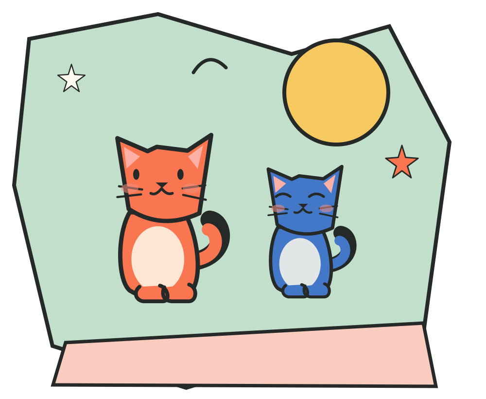

Explore
Look through the age ranges and verified opening hours.
A small licensed capacity. Three early age groups. A simple place to start your childcare search.

LITTLE CATS / CASHION, OKLittle Cats Childcare LLC appears on Oklahoma Human Services' childcare locator as a licensed childcare center in Cashion. It lists a total capacity of eight children and serves infant, toddler and preschool age groups.
The center is listed for school-year operation, Monday through Friday. For current space, routines, pricing and enrollment details, contact the provider directly.
See the official childcare record ↗State-listed capacity
Infant, toddler, preschool
Oklahoma listing
Look through the age ranges and verified opening hours.
Contact the center to discuss openings, schedules and fees.
Ask how to learn about the setting and the next steps for care.
Ask the provider your first question.